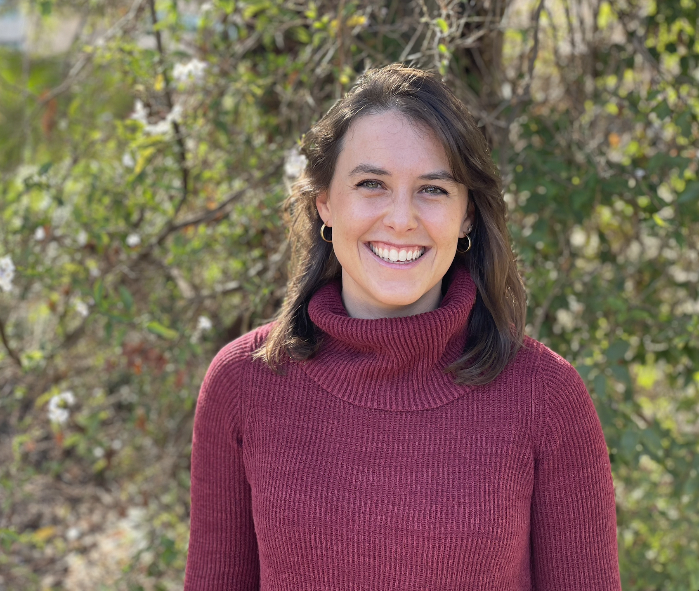

Emma Krasovich Southworth
PhD Candidate, Stanford University (E-IPER Program)
Tropical Cyclones and Dengue Transmission: Work in Progress
Pre-Class Preparation
Preparing for Emma's talk will help you understand her dissertation research in context. Please complete these before Wednesday.
Background Paper on Tropical Cyclones & Infectious Disease
This background paper provides context for understanding how environmental events shape disease transmission. Emma's presentation will cover her own research—unpublished, dissertation work still in development. The pre-reading gives you the scientific foundation needed to appreciate the questions she's tackling.
Ecological & Epidemiological Modeling Primer
Emma's work integrates ecology, climate science, and epidemiology. Explore supplementary resources on how scientists model disease transmission or how climate data feeds into biological predictions.
Key Concepts: Dengue, Tropical Cyclones & Transmission Dynamics
Dengue fever: Mosquito-borne viral disease affecting hundreds of millions annually. Aedes mosquito: Primary vector for dengue; thrives in warm, wet conditions. Tropical cyclone: Rotating storm with strong winds and heavy rainfall. Can drastically alter vector habitat and disease dynamics. Transmission rate: Probability that an infected individual transmits to a susceptible individual. Epidemiological modeling: Mathematical models to understand and predict disease spread patterns.
Meet the Speaker
Background & Training
Emma is a PhD candidate in the Environment & Resources program at Stanford University, co-advised by Erin Mordecai and Marshall Burke. Her research sits at the intersection of ecology, climate science, and public health. She is an NSF GRFP Fellow, a Stanford Data Science Scholar, and an EDGE Fellow.
Research Focus
Emma's dissertation examines how tropical cyclones influence dengue fever transmission in Southeast Asia. She combines ecological theory, climate modeling, and epidemiological data to explore mechanisms linking extreme weather to disease outbreaks, addressing urgent questions about how climate change will affect disease risk.
What You'll Learn
Environmental Change & Disease
Understand how extreme weather events can dramatically alter infectious disease transmission dynamics.
Evaluate Work in Progress
Learn to identify what's established, what's preliminary, and what questions remain open in ongoing research.
Interdisciplinary Research
See how ecology, climate science, epidemiology, and data science come together to address complex health challenges.
Inside a Dissertation
Understand what a PhD project looks like from the inside—including iteration, uncertainty, and genuine questions researchers face.
During the Seminar
The seminar will follow this structure:
Introduction
Welcome to Emma. Framing: what it means to present work in progress and why that's valuable in science.
Research Presentation
Emma presents her dissertation research on tropical cyclones and dengue transmission, including methods, preliminary findings, and open questions.
Q&A & Discussion
Ask questions about her research, methods, or the uncertainties she's grappling with. This is a chance to see how a researcher thinks through open problems.
Questions Worth Asking
When you ask questions about work in progress, consider the unique aspects of this talk:
"Can you explain [concept] more?" or "I'm not sure what you mean by [term]."
"What's your strongest evidence for that?" or "How confident are you in [finding]?"
"What question would you want to tackle next?" or "What's the biggest gap in your work right now?"
"Why did you choose [approach] over [alternative]?" or "How would you test [hypothesis]?"
Post-Seminar Reflection
Within one week of the seminar, respond to both prompts below in approximately 200–300 words total. This assignment is at the "Evaluate" level: you're assessing the quality and completeness of research in progress.
Two Reflection Prompts
1. Strongest Evidence & Remaining Gaps
Based on what Emma presented, what do you think is the strongest piece of evidence supporting her hypothesis? What is the biggest remaining gap or uncertainty?
Note: There is no "right" answer here. The goal is to practice evaluating evidence, even when it's incomplete.
2. Interdisciplinary Research
Emma works at the intersection of ecology, climate science, and public health. How does her interdisciplinary approach compare to the more narrowly focused research you've seen in earlier weeks? What are the advantages and challenges of interdisciplinary work?
Post-Seminar Reflection
Within one week of the seminar, submit your reflection.
📝 Submit ReflectionBefore Class: Discussion Board Post
Before Wednesday, post one genuine question to the Discussion Board. It should reflect that you've read the background paper and are thinking about Emma's work.
💬 Go to Discussion Board